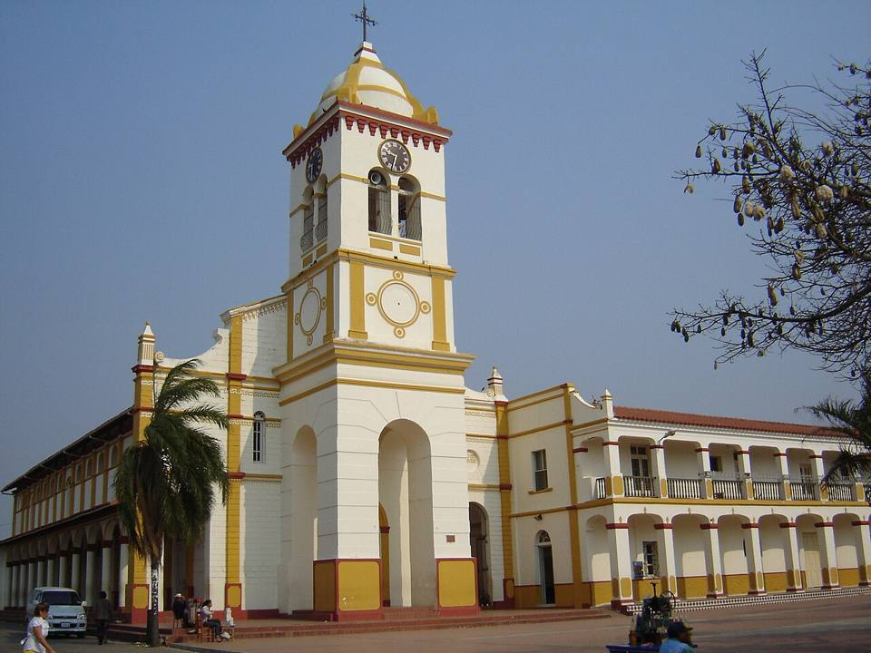
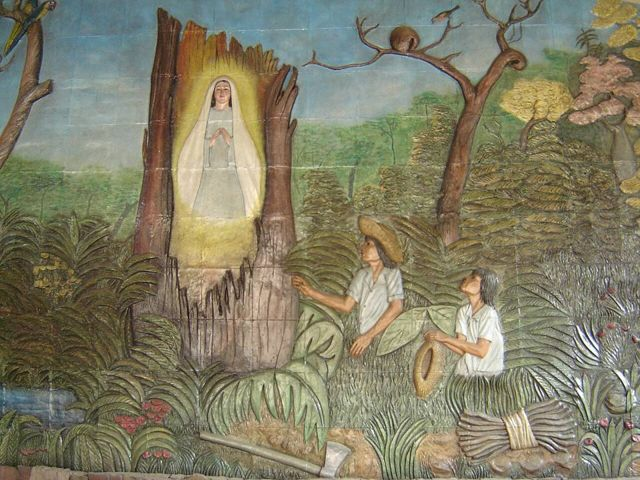
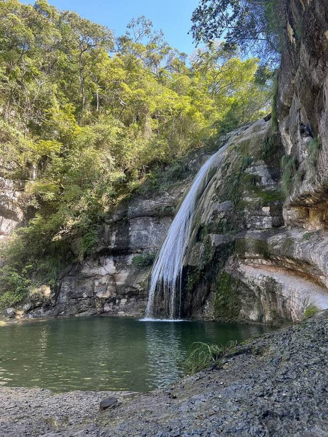

Cotoca
Departamento de Santa Cruz · Cultura e historia

Cotoca es una pequeña ciudad muy cerca de Santa Cruz, conocida por el santuario de la Virgen de Cotoca, patrona de los cruceños. El 8 de diciembre, miles de peregrinos llegan a pie durante la noche. Todo el año se encuentra la cerámica de los alfareros locales y la comida cruceña.
380 maltura
0 a 1 díapara quedarse
Qué hacer
- Santuario de la Virgen de Cotoca
- Cerámica y alfareros de Cotoca
- Cuñapés y sonso en la plaza
Qué comer
- Cuñapé y pan de arrozPanecitos de queso con almidón de yuca o con arroz, calientes con un café en la mañana.
- Sonso de yucaMasa de yuca y queso asada en un palito. Especialidad del Oriente, para comer caliente.
Consejo. A 30 min de Santa Cruz en micro o taxi.
También aquí
- Fiestas Virgen de CotocaLa noche del 7 al 8 de diciembre, miles de peregrinos caminan desde Santa Cruz hasta el santuario de la patrona de los cruceños, con misa, música y feria.
- Artesanía y mercados Cerámica de CotocaCántaros, ollas y figuras de barro hechas por los alfareros de Cotoca, al lado de Santa Cruz. Se encuentran alrededor del santuario.
Cómo llegar a Cotoca
Santa Cruz Carretera (bus, auto) · 30 min
Micro o taxi desde Santa Cruz.
Fotos de Cotoca


Otros lugares de la región
 Santa Cruz de la SierraLa gran ciudad tropical y moderna del Oriente, con aeropuerto internacional (Viru Viru).
Santa Cruz de la SierraLa gran ciudad tropical y moderna del Oriente, con aeropuerto internacional (Viru Viru). Lomas de ArenaDunas de arena blanca y lagunas al sur de Santa Cruz.
Lomas de ArenaDunas de arena blanca y lagunas al sur de Santa Cruz.
EspejillosPozas naturales y cascadas en el río, cerca de Santa Cruz. Laguna VolcánUna laguna escondida en una hoyada de cerros cubiertos de bosque.
Laguna VolcánUna laguna escondida en una hoyada de cerros cubiertos de bosque. SamaipataPueblo bohemio entre Andes y bosque: El Fuerte (UNESCO) y el parque Amboró.
SamaipataPueblo bohemio entre Andes y bosque: El Fuerte (UNESCO) y el parque Amboró. Parque Nacional AmboróBosques de nubes y helechos arborescentes, muy rico en aves.
Parque Nacional AmboróBosques de nubes y helechos arborescentes, muy rico en aves. Buena Vista (Amboró norte)Pueblito al pie del parque Amboró, del lado del bosque tropical: ríos, aves y café.
Buena Vista (Amboró norte)Pueblito al pie del parque Amboró, del lado del bosque tropical: ríos, aves y café. VallegrandePueblo colonial de montaña, en el corazón de la Ruta del Che.
VallegrandePueblo colonial de montaña, en el corazón de la Ruta del Che. La HigueraEl caserío donde fue ejecutado el Che en 1967, hoy lugar de memoria.
La HigueraEl caserío donde fue ejecutado el Che en 1967, hoy lugar de memoria.